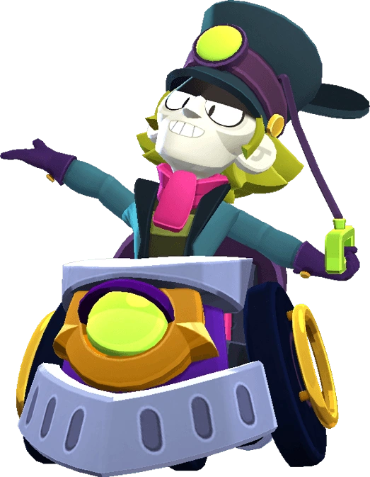

¿Quién es Chuck?
En el pasado fue un maestro brillante, Pero Chuck, el maquinista, cambio las sinfonías de los auditorios por las cacofonías de la estación fantasma con la esperanza de descubrir el sonido que revolucionara el mundo de la música
huck es un brawler Mítico que tiene mucha salud y un gran daño a corta distancia. Su atributo permite que su súper se cargue con el tiempo. Ataca disparando tres nubes de vapor que causan más daño de cerca. Para su súper, Chuck coloca un Poste que daña y derriba a los enemigos si está fuera del alcance de cualquiera de sus Postes, y corre hacia el Poste más cercano, así como a otros Postes si se encuentra en cualquiera de los rangos de sus Postes.
|  |
NIVEL DE FUERZA 11 |
Sus gadgets
DESVÍO: Chuck quita la señal más cercana y recarga su súper. |
TREN FANTASMAL: El próximo súper de Chuck puede atravesar muros. |
Sus habilidades estelares
 |
PRÓXIMA PARADA: Aumenta la cantidad máxima de señales en 1. |
 |
¡EL BILLETE, POR FAVOR!: Al atravesar a enemigos con su súper, roba un 33% de su munición. |
 Braian Arancibia
Braian Arancibia Aya El Baarar
Aya El Baarar